Tây Nguyên, miền đất đỏ bazan với bạn ngàn cà phê và cao su, khí hậu quanh năm ôn hòa, đầy hoang sơ, ẩn chứa nhiều bí ẩn. Trong rất nhiều điều bí ẩn của Tây Nguyên, cần phải kể đến thác Draynur hùng vĩ. Một ẩn số, một thắng cảnh của cao nguyên Đắk Lắk - nơi tôi sinh ra và lớn lên.
Đường đi thác Draynur
Nằm cách trung tâm thành phố Buôn Ma Thuột khoảng 25km về phía Tây Năm. Từ Ngã Sáu Xe Tăng bạn đi quốc lộ 14 hướng về Đắk Nông, đền gần cầu 14 gặp bảng chỉ dẫn đầu ngã 3 thì bạn rẽ trái đi thêm khoảng 10km nữa là tới cổng để vào thác. Đoạn đường khá xấu và khó đi, bụi nhiều và đá cũng nhiều, tuy nhiên sẽ đi qua các vườn cao cu, cà phê, bắp, tiêu, điều và làng của của người đồng bào. Rất xứng đáng để bạn trải nghiệm thử nếu bạn chưa có nhiều dịp lên Tây Nguyên. 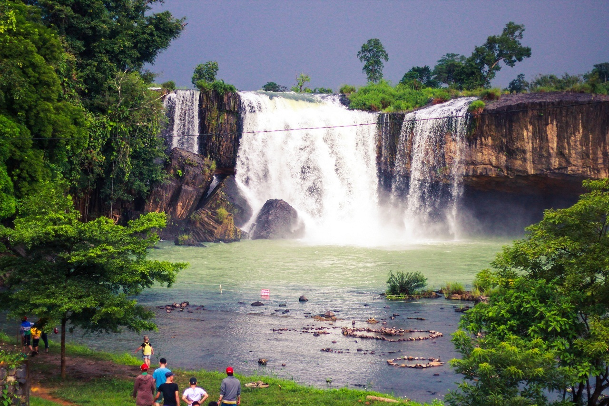 Thác Draynur mùa nước đổ
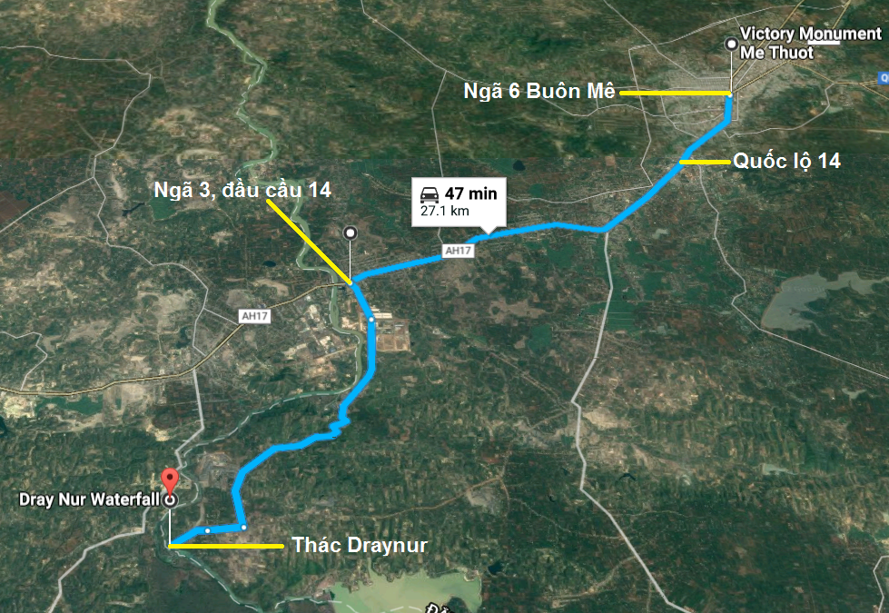 Bản đồ đường đi từ Ngã 6 đến thác Draynur
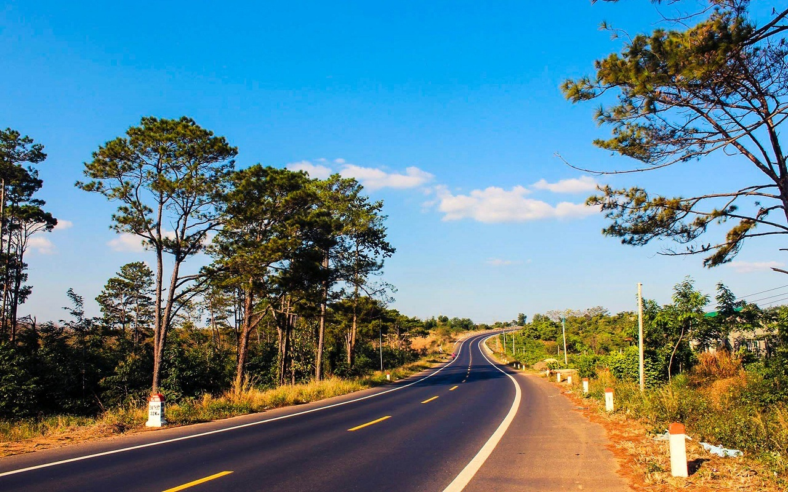 Đường quốc lộ 14 lên Đắk Lắk đẹp như 1 dải lụa
Truyền thuyết về thác Draynur
Thác Draynur gắn với truyền thuyết rằng ngày xưa có đôi trai gái ở hai bản nọ yêu nhau tha thiết nhưng do hai bản đã có mối hiềm khích lâu đời nên đã tìm mọi cách để ngăn cản. Không thể hòa giải được xung đột, không nhận được cảm thông của dân làng, đau khổ và vô vọng vì tình yêu, trong một đêm trăng, đôi trai gái đã nhảy xuống sông để được mãi mãi bên nhau. Đêm đó, trời nổi cơn giông bão, nước sông cuộn trào dâng cao. Hôm sau người dân thấy sông Sê Rê Pôk bị chia thành hai nhánh, ngăn cách đường đi của giữa hai buôn làng. Hai nhánh sống ấy ngày nay là sông Krong Ana và sông Krong Nô. Hai sông này sinh ra thác Dray Nur (còn gọi là thác Cái) và Dray Sap (còn gọi là thác Chồng).
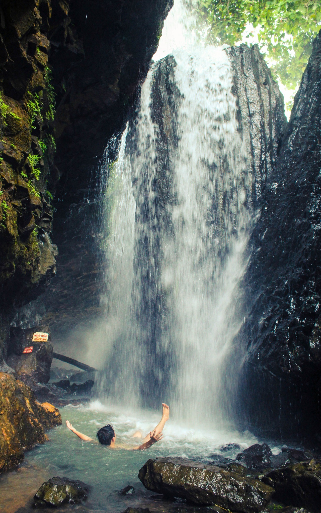 Phía sau thác Draynur. Vách đá cao nên nước đổ xuống rất mạnh.
Thác Dray Nur hay bị nhầm là một phần của thác Dray Sap, nhưng thực tế là sông SerePok chia làm 2 nhánh đổ xuống tạo thành 2 thác và sau đó nhập lại ở phía dưới. Để qua Dray Sap, bạn chỉ cần đi qua 1 đoạn cầu treo bắt qua sông Serepok. 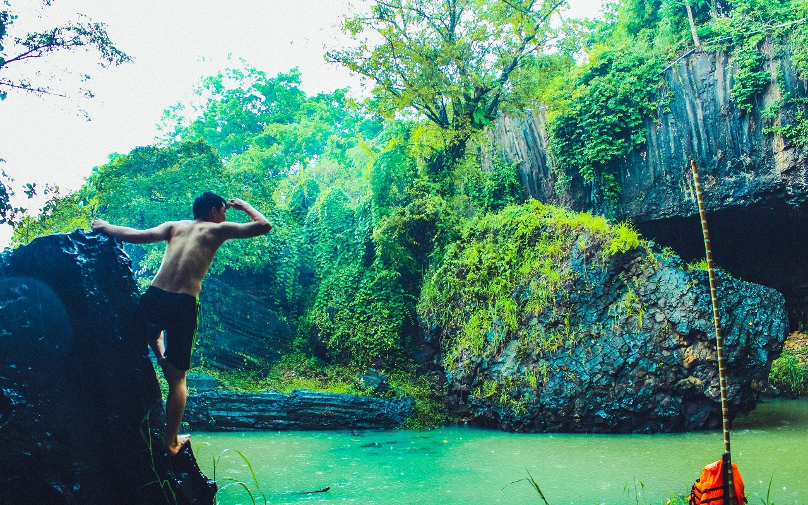 Khung cảnh bình yên của hồ nước nằm cạnh thác.
Ngoài ra còn 1 truyền thuyết khác nữa gắn liền với thác Dray Nur, đó là ở sau thác có 1 hang động, phía dưới hang động được cho là nơi ở của vua Thủy Tề. Ngài có một người con trai khôi ngô tuấn tú lên là Nur, chàng rất thích ngao du ngắm cảnh. Trong 1 lần lên trần gian, chàng hoàng tử đã gặp 2 cô công chúa xinh đẹp, con của vị vua vùng đất nơi chàng đi ngang. Nhưng do vua cha mất sớm nên hai nàng phải đi đào củ mài ăn để sống. Chàng hoàng tử thương 2 nàng vất vả nên đã ở lại trần gian giúp đỡ họ, 2 công chua đem lòng yêu thương và sống hạnh phúc với chàng Nur.
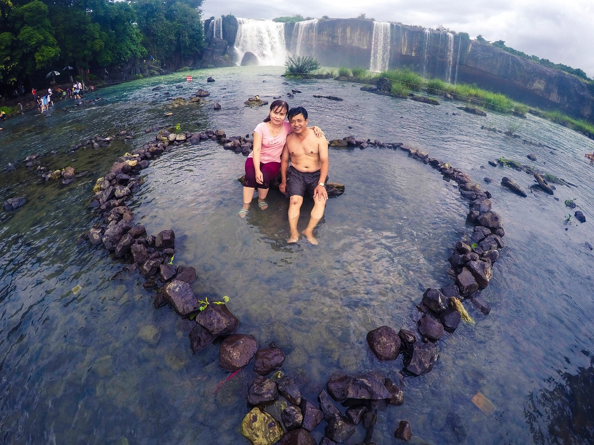 Một nhóm khách du lịch đã xếp đá thành hình trái tim
Một thời gian sau, Nur nhớ vua cha nên muốn quay về thủy cung thăm người. Nhưng hai cô công chúa tìm mọi cách để giữ chàng lại vì sợ chàng đi sẽ rất lâu hoặc có thể không quay trở lại. Chàng Nur không còn cách nào khác, hóa thân thành con dũi vàng vượt nước vào động để thăm cha. Hai người vợ cứ đứng bên ngoài đợi mãi, đợi mãi không thấy chàng Nur quay lại. Theo tiếng Ê Đê, Dray có nghĩa là thác, Nur có nghĩa là con dũi, nên từ đó thác mang tên Dray Nur nghĩa là thác con dũi.
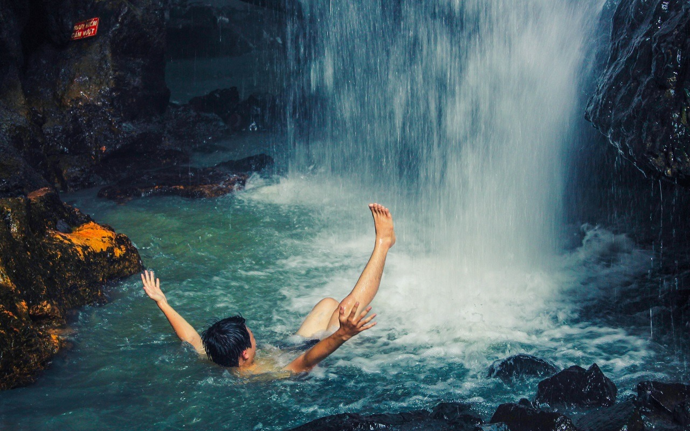 Phía sau thác là hang động rộng gần 3000 m2, được tương truyền là nơi vua Thủy Tề trú ngự.
Hai truyền thuyết khác nhau nhưng đều mang hình ảnh giọt nước mắt chia ly của kẻ ở người đi, tựa như dòng nước lao từ vách đá cao đổ xuống vỡ ra từng giọt.
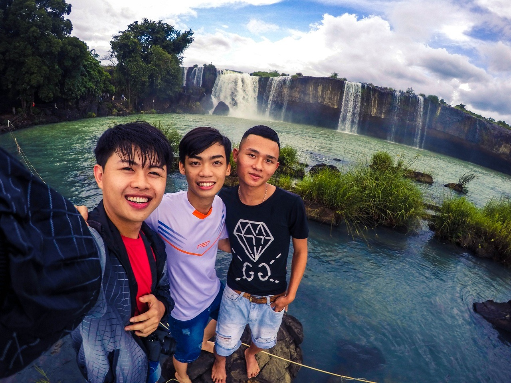 Thác Draynur là một trong những hình ảnh đặc trưng khi nói về Đắk Lắk
Giá vé và đồ ăn ở thác Draynur
Để vào thác, các bạn mua vé ở cổng, giá 30.000/1 người (có tặng kèm 1 ly cafe sữa). Giá đồ ăn thức uống trong đây cũng không cao lắm, có rất nhiều món ăn dân dã mang đậm bản sắc ẩm thực Tây Nguyên cho bạn thưởng thức, như lẩu cá lăng, gà nướng đất sét, bò lúc lắc khoai tây… Bên trong có quầy lưu niệm để các bạn có thể mua quà.
Bạn sẽ được miễn phí 1 ly cafe đậm đà hương vị Trung Nguyên
Bạn có thể mua đồ ăn nước uống bên ngoài vào và tự túc cho hạnh phúc. Rất dễ để có 1 bữa picnic tiệc nướng cạnh dòng thác chảy bởi chỉ cần 1 ít than và bắc thêm vài hòn đá là có cái bếp lửa ngay. Tuy nhiên đừng vứt rác bừa bãi để những thứ nhỏ nhặt làm mất giá trị của thiên nhiên nhé, luôn có các thùng rác để mọi người bỏ vào.
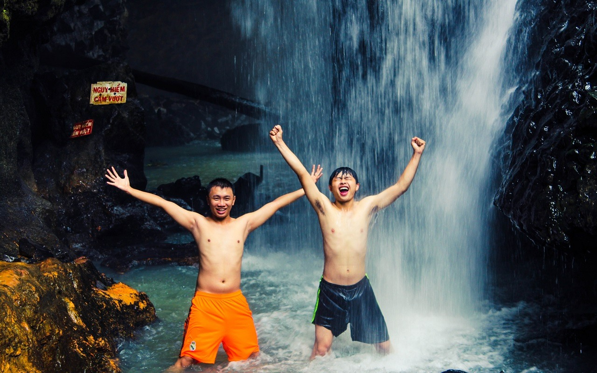 Không khí trong lánh, nước rất mát, thác đổ ầm ầm, tôi cảm nhận rõ cái rát của nước khi dội vào đầu, vào vai.
Thác Draynur đẹp nhất thời điểm nào
Bạn nên đi Draynur vào mùa mưa (từ tháng 5 đến tháng 10) bởi thời điểm đó cảnh tượng rất hùng vĩ. Thác đổ ầm ầm, nước tung bờm trắng xóa trên những tảng đá khổng lồ. Đứng trước ngọn thác, bạn sẽ chợt thấy mình nhỏ bé trước thiên nhiên.
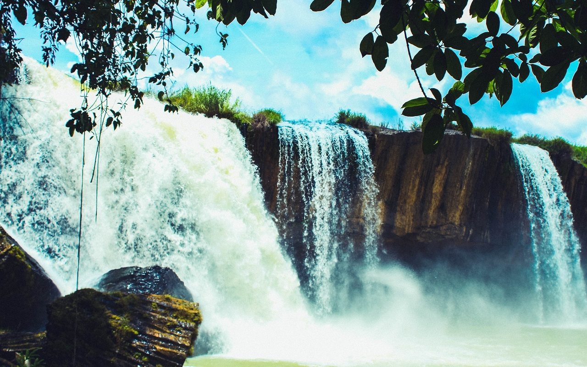 Thác Draynur như một bức tường nước khổng lồ, tung bọt trắng xóa tạo nên những màn sương đầy mê hoặc.
Nước thác luôn trong xanh, đi kèm là không khí thoáng mát của núi rừng đại ngàn, ắt hẳn sẽ xua tan mọi mệt mỏi và mang lại cho bạn tinh thần sảng khoái sau những ngày áp lực với bộn bề công việc.
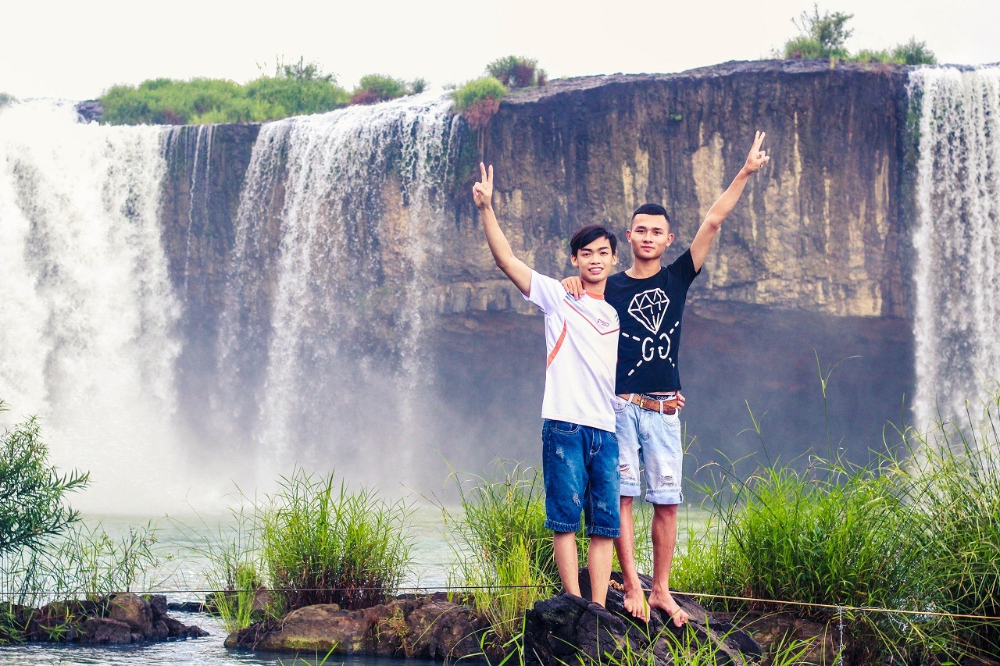 Hãy thử đứng trước thác và cảm nhận dòng nước đang đổ xuống, bằng mắt bằng tai.
Những trải nghiệm không thể bỏ qua khi tới Draynur
Thác Draynur có chiều dài trên 250m, chiều cao 30m, là một trong những hình ảnh đặc trưng khi nói về Tây Nguyên. Thác nước nước chảy rất mạnh. Dưới chân thác là dòng sông chảy êm đềm với mặt nước nông và xanh trong. Bạn có thể thoải mái bơi lội và đắm mình để cảm nhận sự mát lạnh và tinh khiết của dòng nước.
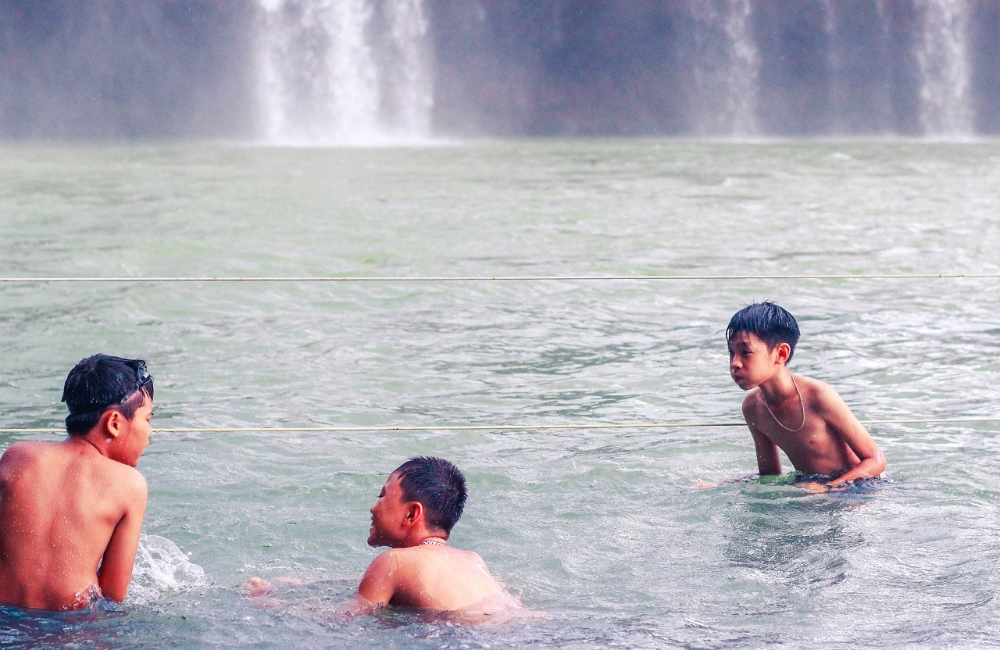 Bạn nên mang theo đồ để sau khi xuống tắm xong lên thay liền. Luôn có các đội cứu hộ túc trực để nhắc nhở khi thấy du khách bơi ra vùng nguy hiểm, nhằm đảm bảo an toàn cho khách tham quan.
Bạn có thể thưởng thức rượu cần, thăm thú nhà sàn, ngắm nhìn thung lũng xanh, ban đêm có thể thuê lều ngủ qua đêm và được đốt lửa trại cùng mọi người đến từ các đoàn du lịch. Ngoài ra bạn còn được chứng kiến dân bản địa giã gạo, những dụng cụ săn bắt của người Ê Đê, hay nhìn ngắm sự tinh xảo của chiếc váy thổ cẩm.
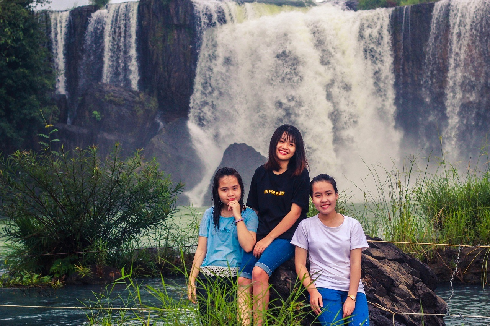 Tôi thích cảm giác ngồi nhìn thác đổ, chỉ nhìn ngắm thôi và không nghĩ ngợi gì.
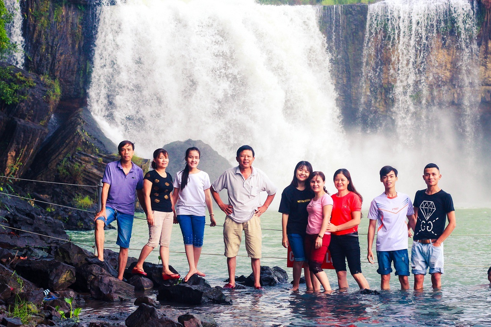 Draynur là địa điểm lý tưởng cho những buổi dã ngoại cùng gia đình và bạn bè. Hay thậm chí là để thoả cái thú khám phá thiên nhiên bí ẩn và hoang sơ nơi núi rừng Tây Nguyên
Một trải nghiệm hấp dẫn nữa đó là đi trên chiếc cầu treo dài và cao bắc qua sông Krong Ana, khi đứng trên cầu bạn sẽ thấy toàn bộ khung cảnh bao la của sông của núi rừng và thác Draynur trước mắt.
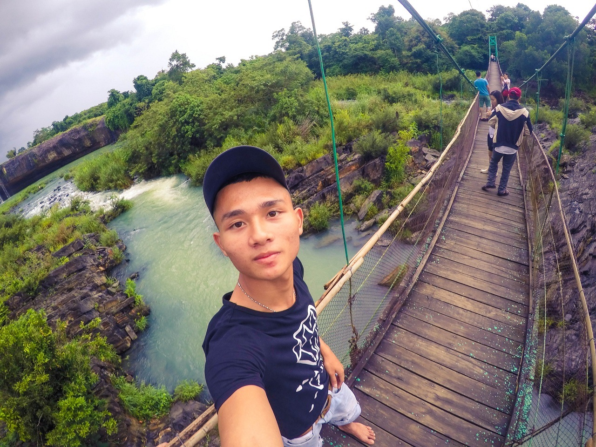 Chiếc cầu treo sẽ dẫn bạn đi từ Draynur qua thác Dray Sáp. Đây cũng là nơi nối tỉnh Đắk Lắk với Đắk Nông.